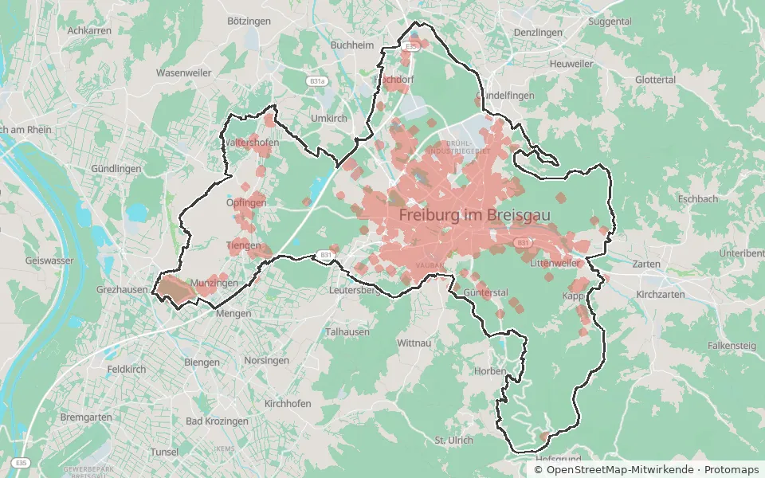
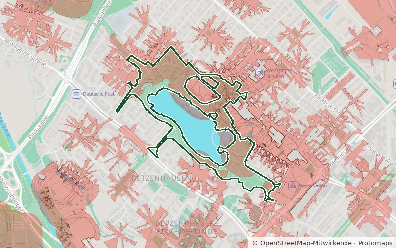
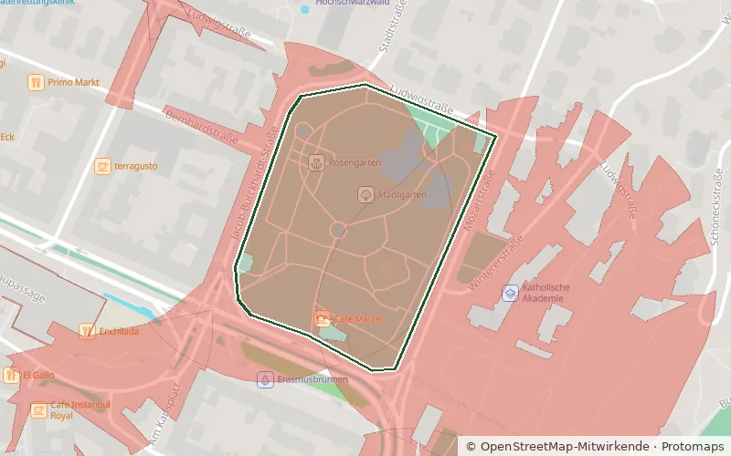
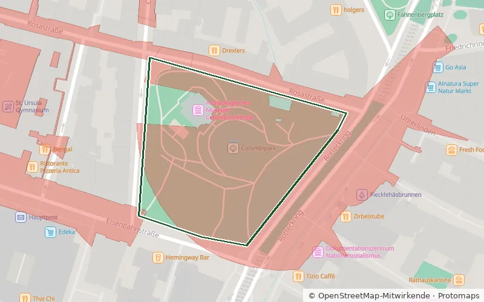
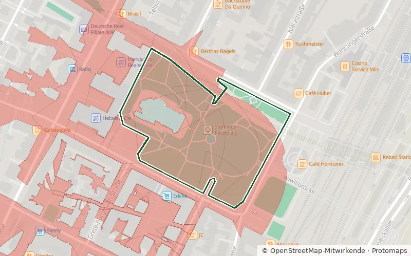
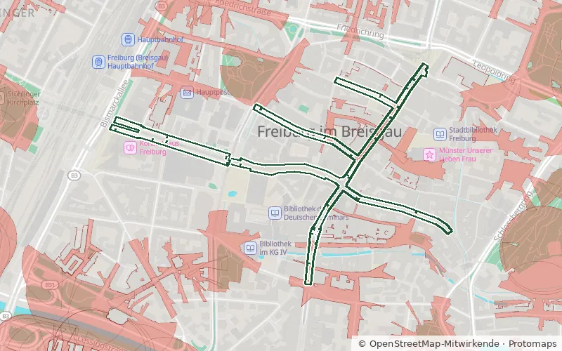
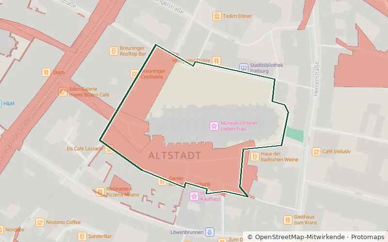

In Freiburg ist öffentliches Kiffen auf 19 km² verboten, das sind 12,6 % der Stadtfläche von 153 km². Grund sind 1 336 Einrichtungen wie Schulen und Spielplätze: In ihrer Sichtweite, bis 100 Meter vom Eingang und ohne Gebäude dazwischen, verbietet § 5 KCanG den Konsum. Dazu kommt die Fußgängerzone der Altstadt von 7 bis 20 Uhr und überall die Gegenwart von Minderjährigen.
Fast die Hälfte der Stadt ist Wald (44 % der Stadtfläche), an den Hängen des Schwarzwalds und im Mooswald, und davon liegen nur 3,4 % in einer Zone; ohne den Wald gerechnet sind es 19,9 %. Seit Juni 2026 ist gerauchtes Cannabis in Baden-Württemberg außerdem an allen Haltestellen verboten (siehe Rauchverbote in Baden-Württemberg).

Woher die Zonen in Freiburg im Breisgau kommen
| Einrichtung | Anzahl | Zonenfläche |
|---|---|---|
| Schulen | 105 | 3,9 km² |
| Kitas und Kindergärten | 149 | 3,2 km² |
| Kindertagespflege | 46 | 0,8 km² |
| Spielplätze | 374 | 6,8 km² |
| Kinder- und Jugendeinrichtungen | 27 | 0,5 km² |
| Sportstätten | 635 | 10,6 km² |
Jede Art für sich gezählt, Überlappungen also mehrfach. Anbauvereinigungen nur, soweit in OpenStreetMap eingetragen.
Die meisten Zonen gehen auf die 635 Sportstätten zurück, danach auf die 374 Spielplätze. Auf Spielplätzen verbieten außerdem die Polizeiverordnung und die Parkanlagensatzung der Stadt das Rauchen (Polizeiverordnung, Parkanlagensatzung).
Seepark, Stadtgarten und Dreisam
Der Seepark liegt zu 77 % in einer Zone: Zwei Spielplätze und sieben Sportanlagen liegen im Park, über 30 weitere Sportanlagen am Rand. Im Stadtgarten sind es 96 %, im Colombipark 85 %; beide haben einen Spielplatz.



Auf einem 100 Meter breiten Streifen Land entlang der Dreisam liegen 36 % in einer Zone. Der Eschholzpark liegt ganz in einer Zone (100 %), der Dietenbachpark zu 72 %, der Mundenhof zu 34 %. Vom Flückigersee liegen 28 % der Wasserfläche in einer Zone, vom Opfinger See 1 %.
Der Stühlinger Kirchplatz liegt zu 87 % in einer Zone, wegen zweier Spielplätze und der Schulen und Kitas rundherum. Seit August 2025 ist er Waffenverbotszone; Alkohol und Cannabis regelt die Verordnung nicht (Stadt Freiburg).

Altstadt
Fußgängerzone ist nach der Sondernutzungssatzung die Kaiser-Joseph-Straße mit Salz- und Bertoldstraße, obwohl dort Straßenbahnen fahren, dazu Teile von Rathausplatz, Rathausgasse und Kartoffelmarkt (Sondernutzungssatzung); seit dem Umbau gehört auch der Rotteckring dazu (Stadt Freiburg). Dort gilt von 7 bis 20 Uhr Konsumverbot; blau sind die Fußgängerbereiche aus OpenStreetMap.
Von Kaiser-Joseph- und Bertoldstraße liegen außerdem 15 % in einer Sichtweiten-Zone. Der Münsterplatz liegt zu 46 % in einer Zone, der Augustinerplatz fast ganz (95 %).


Der Weihnachtsmarkt auf Rathausplatz, Kartoffelmarkt und im Colombipark hat längstens bis 21.30 Uhr offen (Richtlinien); nach 20 Uhr endet dort das Verbot der Fußgängerzone.
Universität und Stadion
Hochschulen sind nach § 5 KCanG keine Verbotsorte. Die Universität verbietet Cannabis aber per Hausordnung in ihren Gebäuden und auf ihrem Gelände (Hausordnung, § 8); ihre Flächen liegen zu 34 % in einer Zone. Im Europa-Park Stadion verbietet die Stadionordnung, „Drogen jeglicher Art“ mitzuführen, „auch Cannabis und Cannabis-Produkte“ (SC Freiburg).
Was sonst noch in Freiburg im Breisgau gilt
Seit Juni 2026 ist gerauchtes Cannabis in Baden-Württemberg auch auf Spielplätzen, Schulgeländen und Kita-Grundstücken, an allen Haltestellen und in Freibädern und Zoos verboten, bis zu 200 Euro (Land Baden-Württemberg). Einen Bußgeldkatalog für das Cannabisgesetz hat das Land nicht; das Gesetz erlaubt bis zu 30.000 Euro. Eigene Verbotszonen für Cannabis hat Freiburg nicht (Stand 27. November 2026).
Häufige Fragen zu Freiburg im Breisgau
Wo darf man in Freiburg kiffen?
Nach § 5 KCanG außerhalb der roten Flächen, etwa im Mooswald (2 % in einer Zone). Nicht auf Spielplätzen, an Haltestellen und auf dem Gelände der Universität, tagsüber nicht in der Fußgängerzone, nie in Gegenwart von Minderjährigen. Weiß heißt nicht sicher erlaubt: Hecken, Bäume und fehlende Einrichtungen kennt die Karte nicht.
Wie genau ist das?
Täglich aus OpenStreetMap gerechnet, mit Gebäuden als Sichthindernis; die Zahlen hier sind vom 27. November 2026. Eine Orientierungshilfe, keine Rechtsauskunft (wie gerechnet wird).
Fehlt eine Einrichtung? Korrekturen in OpenStreetMap stehen am Tag darauf auf der Karte; bitte nur eintragen, was es vor Ort gibt.